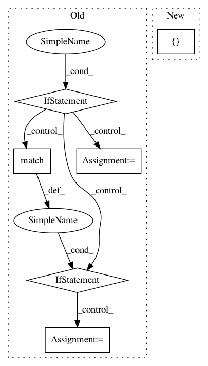

1cde31a291ae4ef70de9698bb019d6916d29afdb,cscs-checks/compile/libsci_acc_symlink.py,LibSciAccSymLinkTest,__init__,#LibSciAccSymLinkTest#Any#,23
Before Change
prgenv = re.match(regex, lib_name).group("prgenv")
// FIXME: Remove this logic after daint upgrade
if prgenv == "gnu":
cver = re.match(regex, lib_name).group("cver")
if cver == "71":
self.valid_systems += ["daint:login", "daint:gpu"]
else:
self.valid_systems += ["dom:login", "dom:gpu"]
else:
self.valid_systems += ["daint:login", "daint:gpu",
"dom:login", "dom:gpu"]
// The prgenv is irrelevant for this case, so just chose one
self.valid_prog_environs = ["PrgEnv-cray"]
self.executable = "ls"
self.executable_opts = ["-al", "/opt/cray/pe/lib64/libsci_a*"]
self.sanity_patterns = sn.assert_found(f"{lib_name}.so", self.stdout)
After Change
def __init__(self, lib_name):
self.descr = "LibSciAcc symlink check of %s" % lib_name
self.valid_systems = [
"daint:login", "daint:gpu",
"dom:login", "dom:gpu",
"tiger:login", "tiger:gpu"
]
regex = (r"libsci_acc_(?P<prgenv>[A-Za-z]+)_((?P<cver>[A-Za-z0-9]+)_)"
r"?(?P<version>\S+)")
prgenv = re.match(regex, lib_name).group("prgenv")
In pattern: SUPERPATTERN
Frequency: 3
Non-data size: 6
Instances
Project Name: eth-cscs/reframe
Commit Name: 1cde31a291ae4ef70de9698bb019d6916d29afdb
Time: 2020-09-10
Author: karakasis@cscs.ch
File Name: cscs-checks/compile/libsci_acc_symlink.py
Class Name: LibSciAccSymLinkTest
Method Name: __init__
Project Name: has2k1/plotnine
Commit Name: 465d854b02acf2266b77eb62a6069cba4dc71d4a
Time: 2013-12-10
Author: jasc@gmx.net
File Name: ggplot/ggplot.py
Class Name: ggplot
Method Name: __init__
Project Name: JasonKessler/scattertext
Commit Name: 1b43ea3d9f7db02075536d9578891af06e324b9a
Time: 2017-12-04
Author: jason.kessler@gmail.com
File Name: scattertext/WhitespaceNLP.py
Class Name:
Method Name: whitespace_nlp_with_sentences